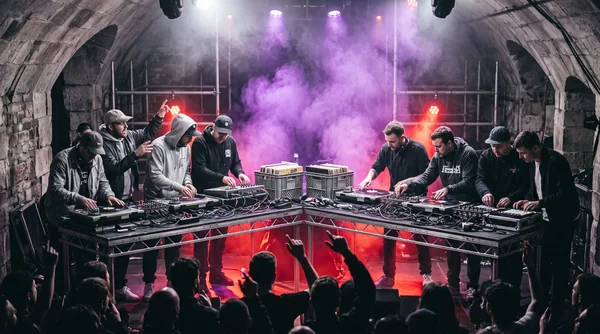
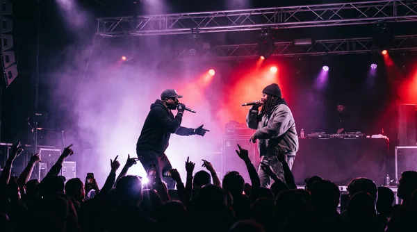
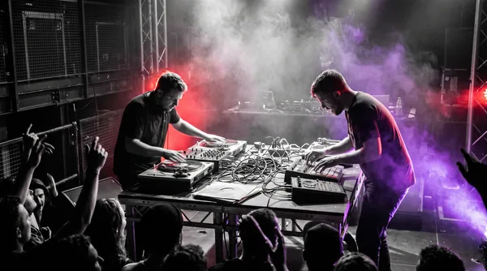

DUELO 1 CONTRA 1
Arena Drummer Duel: Batalha de Batidas
Dois bateristas frente a frente em rounds alternados de 8 compassos. O público e o júri avaliam precisão rítmica, dinâmica, polirritmia e velocidade. Conforme rola a página para baixo, os cartões dos concorrentes entram suavemente no ecrã impulsionados por animation-timeline: view().
Cartões de Duelo dos Concorrentes
Deslize horizontalmente (Touch ou Trackpad) ➔

ROUND 01 • ACÚSTICO
Master Kenji vs Alex Thorne
Taiko Tradicional vs Grime Modular
Velocidade estonteante com baquetas pesadas de carvalho confrontando caixas de ritmo eletrónicas a 140 BPM.
BPM: 130–150
SÁBADO • 19:00

ROUND 02 • POLIRRITMIA
Beatrix Nova vs DJ Warp
Cajón Flamenco vs Sintetizador Piezo
Confronto rítmico em compassos ímpares (7/8 e 11/16) com transição progressiva para batidas breakbeat explosivas.
BPM: 110–165
SÁBADO • 20:30

ROUND 03 • FINAL SUDDEN DEATH
Marcus Vane vs Sarah Chen
Drum & Bass Cru vs Footwork 160
8 compassos sem rede de segurança. O vencedor é determinado por sonómetro decibélico através do aplauso da plateia.
BPM: 174 MAX
SÁBADO • 00:00
Regulamento Oficial do Duelo de Batidas
Regra 1: 8 Compassos Alternados
Cada baterista dispõe estritamente de 8 compassos para responder à frase rítmica do oponente. Ultrapassar a contagem de tempo resulta em penalização imediata de 2 pontos pelo júri.
Regra 2: Proibição de Loops Pré-Gravados
Todas as notas, sequências de sintetizador e batidas acústicas têm de ser geradas e disparadas manualmente em tempo real no palco, sem pistas pré-misturadas.
Regra 3: Medição Decibélica do Público
Em caso de empate técnico no final dos 3 rounds, um sonómetro acústico calibrado instalado no centro do público mede o volume e o entusiasmo dos aplausos para coroar o campeão.
Enquanto scroll() depende da posição absoluta da barra de rolagem, a função view() monitoriza a interseção do próprio elemento com o viewport (semelhante ao IntersectionObserver, mas rodando a 120 fps no thread do compositor da GPU). Combinado com scroll-snap-type: x mandatory, cria um carrossel perfeitamente alinhado:
.battle-carousel-track {
display: flex;
overflow-x: auto;
scroll-snap-type: x mandatory;
}
.battle-card {
scroll-snap-align: center;
animation: reveal-on-view 1ms ease both;
animation-timeline: view();
animation-range: entry 10% cover 30%;
}
@keyframes reveal-on-view {
from {
opacity: 0;
transform: translateY(40px) scale(0.92);
filter: blur(6px);
}
to {
opacity: 1;
transform: translateY(0) scale(1);
filter: blur(0);
}
}